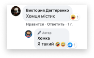
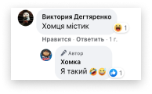

Саме так звернувся б до вас Хомка - кращий експерт в насінні та бренд-обличчя всім відомої однойменної торгової марки.
ТМ “Хомка” уже шостий рік поспіль отримує нагороду в номінації «Краще насіння року» за версією Української Народної Премії. Секрет їхнього успіху в тому,
що бренд завжди пропонує своїм споживачам лише якісне добірне насіння.
Соняшникове чи гарбузове, звичайне або ж солоне, маленьке, велике, а для лінивих - навіть очищене!
Проте всенародну любов та лояльність споживачів треба підтримувати. І найкращим інструментом для цього став маркетинг в соціальних мережах.
Нашу роботу над проектом ми розпочали з ретельного вивчення цільової аудиторії, аналізу її соціально-демографічних характеристик та поведінки в соцмережах.
Оксана - музичний керівник у сільській школі на Полтавщині. Має чоловіка та обожнює 2 своїх дітей.
У перервах між уроками заглядає на FB, щоб надіслати друзям вітальні листівки з Viber, знайти рецепт смачної страви на вечерю та перевести подих після бешкетників із 7-А.
Вечорами полюбляє дивитися серіали та лузати насіння ТМ “Хомка”. Для неї це особливий вид медитації.
Наше маркетингове дослідження показало, аудиторія бренду хоче отримати корисний lifestyle контент.
Але водночас не проти, аби її розважили та бодай на мить відірвали від рутини.
• Тож для бренду ми визначили архетип “свого хлопця” - простий, товариський та завжди відкритий до спілкування.
• А комунікація в соціальних мережах базувалася на методі сторітелінгу від імені брендгероя - хом’яка Хомки. Ми перетворили його на справжнього блогера зі своєю унікальною легендою.
Він вів активне життя, займався спортом, любив кіно, частенько готував всіляку смакоту, багато подорожував та був справжнім еко активістом.
• До того ж, для Хомки прописали характерний tone of voice: дружній, та привітний, часом повчальний,
а інколи іронічний. Він розмовляє однією мовою зі своєю аудиторією, лагідно називаючи її “пухнастиками”.
У межах розробленої SMM-стратегії контент був розділений на такі рубрики:


 
